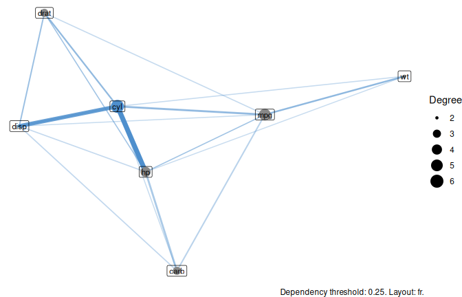
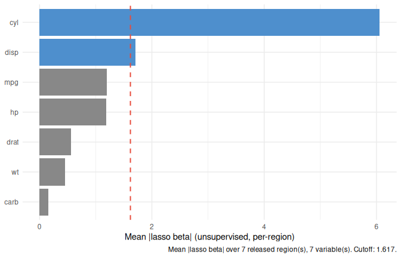
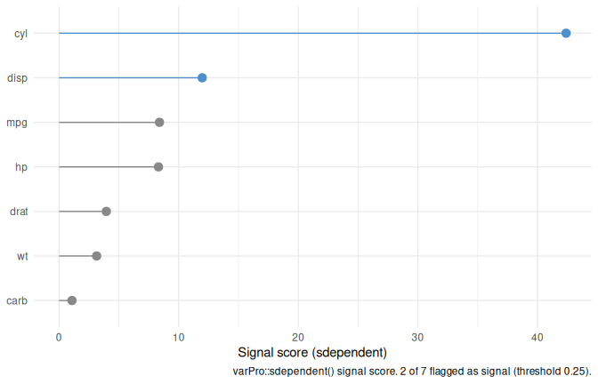

library(ggplot2)
# Match the pattern used by the other vignettes: try the installed
# package first, fall back to pkgload::load_all() for the R CMD check
# vignette rebuild where the package isn't yet on .libPaths(). All varPro
# calls below are ::-qualified, so no library(varPro) is needed.
if (requireNamespace("ggRandomForests", quietly = TRUE)) {
library(ggRandomForests)
} else if (requireNamespace("pkgload", quietly = TRUE)) {
pkgload::load_all(export_all = FALSE, helpers = FALSE,
attach_testthat = FALSE)
} else {
stop("Install ggRandomForests (or pkgload for dev builds) to render this vignette.")
}Importance without a response
Most measures of variable importance start from a question: which predictors help explain this outcome? Permutation VIMP, the varPro release rules, the per-rule lasso weights behind gg_beta_varpro() — all of them score a variable by how much it moves a response y. The companion varPro vignette walks that supervised toolkit end to end.
But sometimes there is no y. You have a matrix of predictors and you want to know which columns carry the structure of the data: which variables define its shape, which travel together, and which are close to noise. That is the job of unsupervised varPro. varPro::uvarpro() grows a forest on the predictor matrix alone, with no response, and scores each variable by how much entropy it contributes to the regions the forest carves out (Lu and Ishwaran 2024). “Important” here does not mean useful for prediction. It means a variable helps reconstruct the feature space that the others cannot.
This is a short vignette. It walks the three gg_* views of a single uvarpro() fit, and each one answers a different question about that fit: what depends on what, what ranks highest, and where to draw the line between signal and noise.
One fit, three views
We’ll use mtcars. Its columns are all numeric, and several of them measure closely related things — displacement, horsepower, weight, and cylinder count all track engine size — so the unsupervised structure is easy to read.
Notice what uvarpro() was handed: the data frame, and nothing else. No formula, no outcome column singled out. All three views below read off this one fit. Two of them rest on the same get.beta.entropy() matrix, which is the only part worth caching, so we compute it once and pass it to both rather than paying for it twice:
beta_fit <- varPro::get.beta.entropy(u)What depends on what: gg_udependent()
gg_udependent() reads cross-variable structure off the fit and draws it as a network: nodes are variables, edges are dependencies above a configurable threshold. The picture is built with ggraph, which lives in Suggests rather than Imports, so install it if you want this view.
plot(gg_udependent(u))
Clusters of mutually connected variables are worth a second look. Because the fit has no response, a cluster tells you these columns are correlated in feature space regardless of whether any of them would matter for a prediction. When you do have a downstream model, that is useful on its own: a variable can be important for prediction and still sit in a tight cluster with a near-duplicate, and in that case parsimony may favour dropping one member of the cluster without losing much.
What ranks highest: gg_beta_uvarpro()
The network shows structure; gg_beta_uvarpro() turns the same fit into a ranking. It is the unsupervised analogue of gg_beta_varpro(): from the entropy matrix it aggregates the per-region lasso coefficients into a mean absolute weight per variable (beta_mean), orders them most-important first, and flags the ones above a selection cutoff. Here we hand it the beta_fit we already computed.
plot(gg_beta_uvarpro(u, beta_fit = beta_fit))
Read it as the unsupervised counterpart of a VIMP bar chart. The tall bars are the variables that most define the structure of the predictor space. Paired with the network above, you get both halves of the story: which variables carry the most unsupervised signal, and how they group.
Where to draw the line: gg_sdependent()
A ranking invites the obvious next question: where is the cut? Which variables are signal, and which are noise? gg_sdependent() answers that narrower question off the same fit. It wraps varPro::sdependent() and returns one row per candidate variable — an importance score, its degree in the dependency graph, and a signal flag — drawn as a ranked lollipop.
plot(gg_sdependent(u, beta_fit = beta_fit))
Where gg_beta_uvarpro() ranks all the variables, gg_sdependent() makes the cut explicit, separating the columns the unsupervised analysis treats as signal from the ones it treats as noise.
Reading the three together
The three views are one workflow, not three unrelated plots. Start with gg_udependent() to see the structure, rank it with gg_beta_uvarpro(), then let gg_sdependent() draw the signal-versus-noise line. They all derive from the one uvarpro() fit, and two of them from the one get.beta.entropy() matrix, so computing that matrix once (as we did above) and passing it in keeps the whole sequence cheap.
For the supervised side of varPro — VIMP, partial dependence, per-rule lasso refinement, local importance, and anomaly scoring — see the companion varPro vignette.
References
Lu, M., and H. Ishwaran. 2024. “Model-Independent Variable Selection via the Rule-Based Variable Priority.” arXiv Preprint. https://arxiv.org/abs/2409.09003.